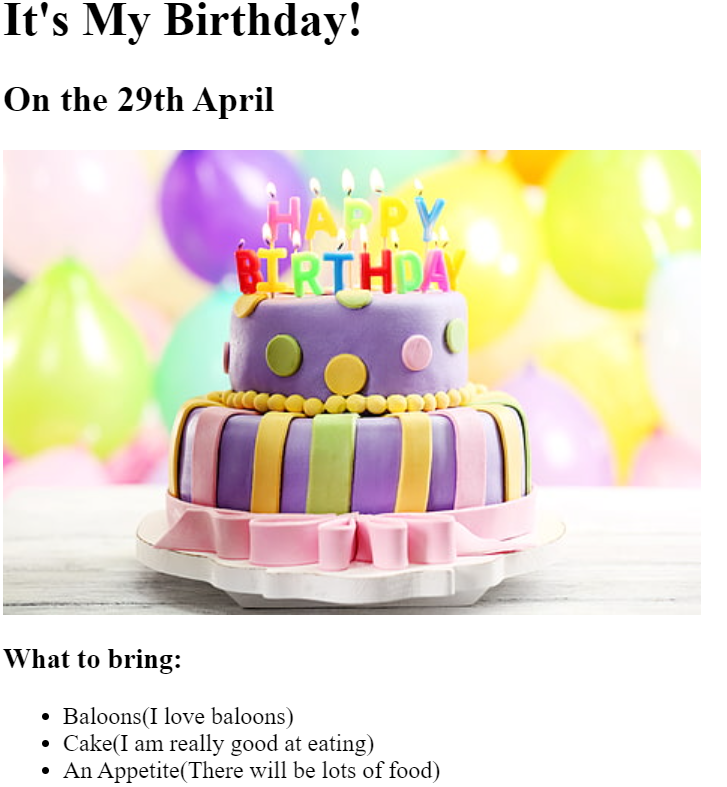
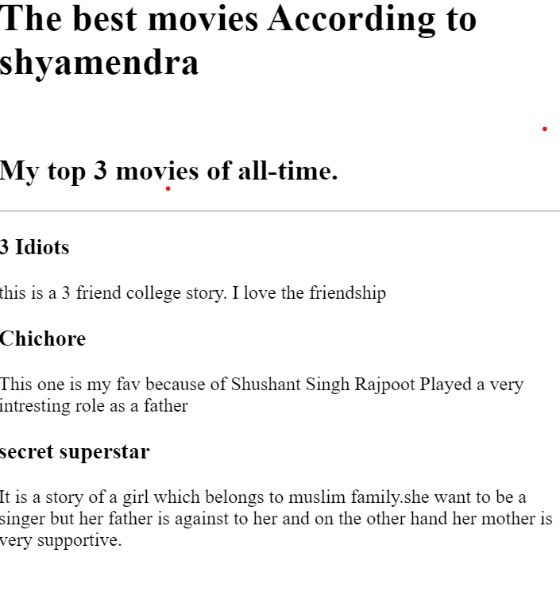

Birthday Invitation Cards Webpage:
Movie Ranking Webpage :
Media Player App Using Flutter Framework-

Highly skilled Front End Developer with a passion for creating visually appealing and user-friendly interfaces. Dedicated to leveraging expertise in HTML, CSS, and JavaScript to deliver responsive and interactive web solutions. Seeking to contribute innovative design and development skills to a dynamic team in a fast-paced environment.
( Oct 2021 - Present)
Internship-(Jan 2020 - Mar 2020)